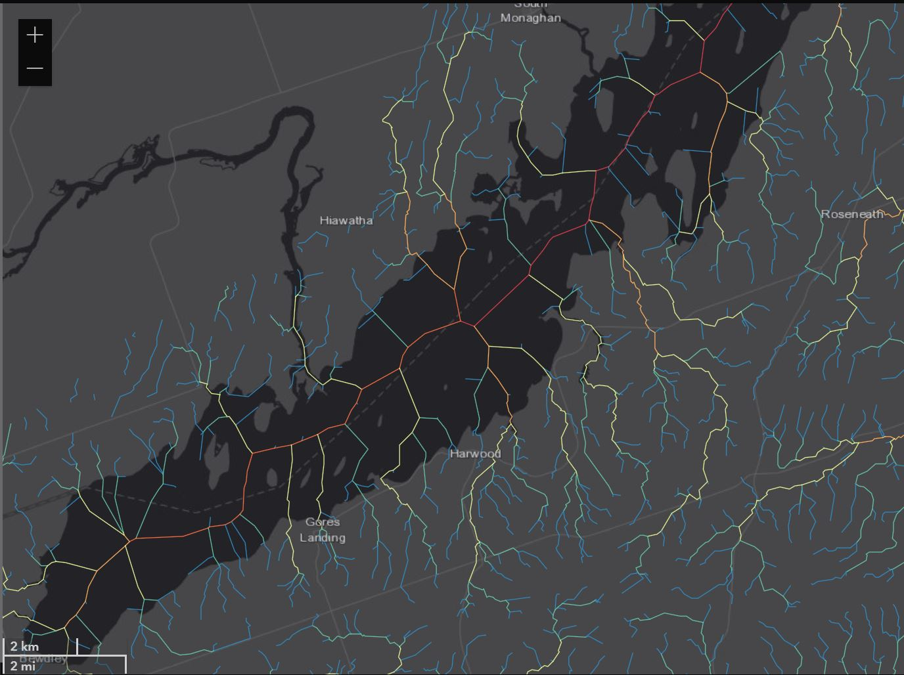

Headwater streams, custom script tools, poster map and web application delivered to the client.
Photo Credit: Chelsea Marcantonio via the Nature Conservancy of Canada
Hydrological Modelling Results
Hydrological modelling produced a stream network with 12,952 features where each feature has a unique HydroID,
NextDownID of the next downstream feature and an attributed Strahler stream order (STRAHLER attribute). Stream order ranges from 1 to 7
with a total of 11,359 streams having a Strahler stream order of 1, 2 or 3. This means headwater streams make up approximately 87 percent of the streams in the study area.
Trace Downstream and Upstream Script Tools
The Trace Downstream script tool uses the Trace tool to find all stream features located downstream from a start point. An input trace network
and start point are defined by the user. The start point can be a feature layer on the map, a feature class or interactively created with the pencil icon.
Upon completion of the script tool, single stream features which connect to the upstream starting point are selected.
Similarly, the Trace Upstream script tool uses the Trace tool on a user-defined input trace network and start point to find all stream
features located upstream from a start point. Upon completion of the script tool, all streams located upstream from the starting point are selected.
Large Format Poster Map
The static map (36x48) visualizes the results from stream modelling, using a custom Color Brewer colour ramp to highlight the
headwater streams in the study area. Major highways, waterbodies and focal areas contained within an inset map are included for reference.
A print-friendly version of the static map uses the same symbology with a lighter basemap to provide constrast between water and land when the static map is printed.
Web App: ArcGIS Experience Builder
A web experience was built to aid in the visualization of stream order in the streams feature class alongside
cold-water streams data. When opened, the home page shows a web map with the ordered streams in the study area (Figure 3.8). Functionality
in the web map includes the ability to pan, zoom in, zoom out, change the base map, and measure length and area. Layers on the web map
which include a polygon for Rice Lake, stream features from the Streams feature class, cold-water streams and 40m buffers around each
cold-water stream segment. The horizontal navigation bar at the bottom of the screen is used to switch between views. There are a total
of nine views in the web experience: a view for the entire study area and one for each focal area.
In the left panel, a user has the ability to toggle layers on and off with the eye icon beside each layer. When
a layer is turned off, there is a slash through the eye icon and it is no longer visible on the web map. As you can see, virtual stream segments
that run through Rice Lake are shown when the Rice Lake layer is turned off. By clicking on the 3 dots beside the layer's name, the opacity of the
layer can be increased to emphasize features or decreased to de-emphasize features.

Below the web map are filters for the Stream layer. Streams can be filtered by their Strahler stream order to quickly
identify headwater streams in the study area. The first filter labelled “1, 2 & 3 Order Streams” selects and displays all features in the Streams
layer where STRAHLER = 1 or STRAHLER = 2 or STRAHLER = 3 (all headwater streams). The second filter labelled “1 & 2 Order Streams” selects and displays
all features in the Streams layer where STRAHLER = 1 or STRAHLER = 2. The last filter labelled “1st Order Streams Only” selects and displays
all features in the Streams layer where STRAHLER = 1. When all three filters are on, only Order 1 streams are displayed.
File Geodatabase and Supporting Files
The streams delineated from the EFDIR and all the data used to construct the trace networks, static map and web experience
were imported into a file geodatabase called RLP_LIP_2021.gdb. Three feature datasets are used to organize data by deliverable category. The RLP_LIP_2021.tbx
toolbox contains two hydrological models that can delineate streams from a DEM or EFDIR and the Trace Downstream and Trace Upstream script tools. Additional
files include the Python (.py) script files required to power the script tools, a layer (.lyrx) file that stores the point symbology for the Input Start Point
parameter and a layer (.lyrx) file that stores the symbology for stream order (STRAHLER attribute in the Streams feature class).